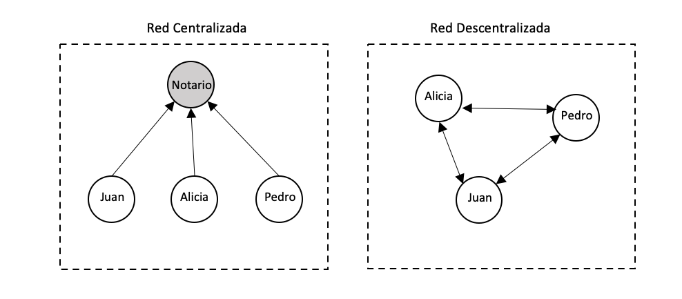

En este post intento explicar lo que es una blockchain de la forma más simple, visual e interactiva posible. No es necesario tener conocimientos de programación o criptografia para entender como funciona una blockchain. Si quieres entrar más en detalle tengo otro post explicando como programar una blockchain en Python desde cero.
Lo básico
La Wikipedia define blockchain como: “una etiqueta que a través de una estructura de datos cuya información se agrupa en conjuntos (bloques) a los que se le añade metainformaciones relativas a otro bloque de la cadena anterior en una línea temporal para hacer un seguimiento seguro a través de grandes cálculos criptográficos”. ¿Pero qué significa todo esto? La traducción literal de “blockchain” al español es: “cadena de bloques”. Pero ¿qué son estos “bloques”?, ¿y por qué están “encadenados”?
Cuando hablamos de una cadena de bloques nos referimos a una serie de objetos, o bloques, que contienen una información, pero no son un grupo de objetos sin relación entre ellos, sino que cada objeto hace referencia al anterior. Imaginemos por ejemplo un libro, al final podemos definir un libro como una cadena de paginas o “page-chain”, el libro solo tiene sentido si las paginas están ordenadas correctamente.

En una blockchain cada bloque sería como una pagina de un libro que hace referencia a la pagina anterior. Vale, pero esto para qué sirve.
¿Para qué sirve una blockchain?
Para entender la utilidad de una blockchain primero tenemos que entender las diferencias entre una red centralizada y descentralizada. Una red centralizada depende de una persona o entidad central, y el resto de los participantes de esa red confían en el nodo central para supervisar el correcto funcionamiento de la red. Un ejemplo de red centralizada es un grupo de amigos que confían en un notario o nodo central para llevar las cuentas del grupo. Cada gasto que hacen se lo comunican al notario y este se encarga de llevar el balance de gastos del grupo de amigos. Este sistema falla si el grupo no puede confiar en el notario para llevar las cuentas. Existen muchos casos en los que no conviene confiar en una persona o entidad para manejar datos, contratos o dinero. Una red descentralizada es una solución a este problema de desconfianza, ya que en una red descentralizada todos los participantes son los encargados de supervisar la red y nadie puede tener más poder que el resto. Por ejemplo, en el caso del grupo de amigos todos tendrian una copia de una libreta en la que apuntan los gastos de todos. Por supuesto esto no es tan facil, existen unas tecnicas que permiten que una red descentralizada funcione y esto es para lo que sirve una blockchain.

Una blockchain es una herramienta que nos permite crear una red descentralizada en la que todo el mundo pueda confiar en la veracidad de la información apuntada, aunque nadie se fie de nadie. Una blockchain nos permite registrar información inmutable y de forma secuencial.
Imaginemos el caso de un grupo de amigos que quieren llevar las cuentas de su viaje al caribe. Para ello han comprado un cuaderno común y en cada página apuntan cada gasto. Si en el grupo de amigos todos se fían de todos pues genial, pero ¿qué pasa si no se pueden fiar?, uno de ellos podría modificar el gasto en una de las páginas y así robarle dinero al resto. La solución es “descentralizar” el cuaderno, o en otras palabras que cada uno tenga una copia exacta del cuaderno, pero a priori, esto no parece solucionar nada, ¿cómo sabemos si alguien ha modificado su copia del cuaderno? Podríamos solucionar esto haciendo las páginas inmutables, escribiendo en las páginas con boli, por ejemplo. Pero al final siempre se puede arrancar la página y meter una nueva modificada, y en el mundo digital todo se puede modificar sin dejar rastro. Lo que podemos hacer para asegurarnos que nadie ha modificado el cuaderno, es que las paginas estén encadenadas de tal forma que al modificar un detallito de una pagina el cuaderno deje de tener sentido. Esto se puede conseguir haciendo que la información de cada página esté codificada en la siguiente página y así sucesivamente. Por ejemplo, apuntamos en la parte de abajo de cada página la inicial de la persona y la cantidad del gasto de la página anterior, y vamos encadenadnos estos códigos. De está forma si alguien modifica una página, entonces cualquiera puede comprobar que los códigos que encadenan las páginas no cuadran.
Si Pedro decide modificar la página 2 de su cuaderno y se anota 85€ en vez de 15€ entonces el código apuntado en la página 3: "A20P15" no cuadra, debería ser "A20P85". Así podemos comprobar que alguien ha modificado la página 2 y al verificar el cuaderno de Pedro veríamos que es incorrecto, no cuadra. Así cada vez que añadamos una página nueva al cuaderno verificamos los cuadernos y por votación se eligen los cuadernos de Alicia y Juan para formar parte del “cuaderno oficial”

Pero aquí surgen algunos problemas que no hemos tenido en cuenta. Cualquiera puede modificar una página del cuaderno y modificar todos los códigos sucesivos para validar el cuaderno. De esta forma nadie podría sospechar que se ha modificado el cuaderno y al verificarlo parecería que está todo en orden. Esto se soluciona haciendo que cueste mucho trabajo modificar el código de cada pagina, de forma que quien intente modificar todas las páginas tenga que realizar una cantidad de trabajo prácticamente imposible. Podemos hacer que haya que incluir la solución a una ecuación en el código de cada pagina. Resolver esta operación matemática cuesta tiempo, esto es lo que comúnmente se llama “proof-of-work” o prueba de trabajo, es decir que para añadir una pagina nueva tienes que demostrar que has realizado una cantidad de trabajo que haría imposible modificar todas las páginas en un periodo de tiempo razonable.
Otro problema es que cualquiera puede hacerse pasar por otra persona. Por lo que necesitamos alguna forma de “firmar” las páginas de tal forma que se pueda verificar que cada gasto ha sido anotado por la persona correspondiente.
Aparte de estos problemas, es fácil darse cuenta de que el código que encadena las paginas se hace más grande con cada pagina, si tenemos un cuaderno de millones de paginas el código se hace demasiado grande. Necesitamos alguna forma de que todas las páginas tengan un código del mismo tamaño
Para resolver estos problemas hacemos uso de la criptografía, y es de aquí de donde surge la palabra “criptomoneda”.
Crypto
La criptografía nos permite cifrar información o firmar datos mediante el uso de algoritmos matemáticos. Esto es lo que aporta tanta fiabilidad a las blockchains. Cuando
Función hash
La función hash es una de las herramientas criptográficas más importantes y es imprescindible para crean una blockchain. Aunque el funcionamiento de una función hash puede ser muy complicado el concepto es bastante simple. Se trata de una función que convierte una entrada (la palabra “hola” por ejemplo) en un a salida que parece aleatoria.

Lo que hace a la función hash tan útil es que siempre devuelve un resultado del mismo tamaño. Existen muchos tipos de algoritmos hash diferentes, uno de los mas usado es el SHA256, que devuelve 256 bits. Da igual que la entrada de la función sea la letra “a” o el Quijote entero, siempre el resultado son 256 bits. Prueba a experimentar con la función hash:
#| standalone: true
import hashlib as hs
from shiny import *
app_ui = ui.page_fluid(
ui.tags.style(
"""
.app-col {
border: 1px solid white;
border-radius: 5px;
background-color: #ffffff;
padding: 8px;
margin-top: 5px;
margin-bottom: 2px;
}
"""
),
ui.row(
ui.div(
{"class": "app-col"},
ui.p(
ui.input_text("x", "", placeholder="hola"),
),
ui.p(
ui.output_text("txt"),
),
),
align="center",
)
)
def server(input, output, session):
@output
@render.text
def txt():
if len(input.x()) == 0:
hash = hs.sha256(("hola").encode()).hexdigest()
else:
hash = hs.sha256((input.x()).encode()).hexdigest()
return f'{hash}'
app = App(app_ui, server, debug=True)
La función hash es caótica, que quiere decir que un minúsculo cambio a la entrada (por ejemplo, poner la “h” en mayúscula) provoca un resultado completamente diferente. Es importante distinguir caótico de aleatorio, la función hash no es aleatoria, es determinista, siempre devolverá la misma salida a la misma entrada. Se podría comparar la función hash con el doble péndulo, otro ejemplo de sistema caótico. Cambiar un poquito las condiciones iniciales del doble péndulo provoca resultados de movimiento completamente diferentes. En el ejemplo inferior parece que los dos péndulos son iguales al principio, pero en realidad tienen un cambio despreciable en el ángulo inicial, pero este minúsculo cambio es suficiente para alterar por completo el resultado.


Otra característica del sistema de doble péndulo es que pasado un tiempo es prácticamente imposible deducir el estado inicial del péndulo. De la misma forma, es imposible conocer que entrada a la función hash dará un resultado especifico o, en otras palabras, es imposible hacer la función hash al revés. La única forma de saber que resultado dará una entrada es realizando la función hash sobre esa entrada.
Si recuerdas los problemas mencionados antes, la función hash resuelve uno de los problemas: codificar la información de cada página (o bloque) de una forma única, determinista y con un tamaño fijo. De esta forma los bloques se “encadenan” porque cada bloque contiene el hash del bloque anterior.
La función hash también nos permite implementar la prueba de trabajo. Computar la función hash requiere una cantidad de tiempo. Como podías ver en la función hash interactiva de antes, no se tarda mucho en calcular, pero si se ejecuta varias veces se empieza a notar. Para implementar la prueba de trabajo en una blockchain podemos, por ejemplo, añadir una variable libre (nonce) a la entrada de la función hash y exigir que el hash de cada bloque empiece por "0000". Como es imposible saber que entrada resultara en un hash que comience por "0000", la única forma es probar y probar hasta acertar. Este proceso de probar miles de entradas posibles para la función hash requiere computación y tiempo. Por ejemplo, usando la palabra "hola" como entrada del hash, probamos "hola_0", "hola_1", "hola_2"… Al final después de un tiempo resolvemos la prueba de trabajo, si probamos con "hola_167537"obtenemos el hash que comienza con 4 ceros:
0000c24a5157df9c08de36972e30404e463b1e76bbb25007395d455b9494ad77
Firma digital
La firma digital, como una firma real, nos permite firmar información de tal manera que cualquiera pueda comrpobar que efectivamente, esa infromación firmada la hemos creado nosotros. Sin esta herramienta una criptomoneda no podria funcionar ya que culaquier miembro de la blockchain podria hacerse pasar por otra persona. Si nos paramaos a pensar, qué es una firma en realidad, no es más que una modificar un documento con una marca que solo la persona que firma puede hacer. El proceso de firmar un documento es bastante intuitivo, pero ¿cómo puede alguien comprobar que la firma es de verdad?. Aquí es donde entra en juego la encriptación asimetrica. La encriptación no es más que el proceso de bloquear o esconder algo del acceso público. Las puertas normales de nuestras casas son un tipo de “encriptación” simetrica. Tenemos una llave que es la misma que cierra o abre la puerta, el proceso de abrir es simetrico al de cerrar. Lo mismo pasa con los candados de la bici o las taquillas. En cambio, en una encriptación asimetrica hay dos llaves: la que cierra y la que abre. Si nuestras casas tuvieran puertas asimetricas necesitariamos una llave diferente para abrir la puerta que para cerrarla. Parece complicarse para nada, pero esto es extremadamente util para las firmas digitales.

En una firma digital la llave de cerrar es la llave privada, y la de abrir la pública. La llave pública se genera a partir de la llave privada, pero es imposible conocer la llave privada sabiendo unicamente la pública. Digamos que Alicia tiene un par de llaves publica y privada y quiere firmar una carta. La pública la puede ver cualquiera y privada solo la conoce ella. Alicia encripta una carta usando su llave privada y se la manda a Juan. Recordemos que esa carta ahora unicamente se puede abrir con la llave pública de Alicia. Juan abrr la carta con la llave publica de Alicia y de esta forma Juan sabe que esa carta la ha encriptado Alicia con su llave privada sin tener que conocer cual es la llave privada.
¿Qué tiene que ver esto con Bitcoin?
Si has llegado hasta aquí, enhorabuena! Ya sabes lo que es Bitcoin. Bitcoin no es más que una blockchain en la que la información de cada bloque (o página) son una serie de transaciones. Es un cuaderno compartido, en el que están registradas transacciones en cada página. Cuando una persona dice que tiene x bitcoins, en realidad esos bitcoins no son más que el resultado de buscar en el “cuaderno” de bitcoin todas las transacciones y sumar las recibidas, y restar las enviadas. La llave pública no es más que la dirección de la cartera y la llave privada es lo que te permite firmar transacciones en las que seas tu el emisor, o en otras palabras, es la famosa contraseña que te da acceso a tus bitcoins. Si pierdes tu llave privada de bitcoin, pierdes la capacidad de mover los bitcoins que tienes asociado a esa cartera y como la blockchain es descentralizada y no hay ningún “jefe” nadie te puede ayudar, habras perdido esos bitcoins para siempre.
Hay un par de dettales más en Bitcoin. Antes hablabamos de la “prueba de trabajo”. Esto es lo mismo que el “minado”. El proceso de añadir un bloque nuevo a bitcoin es lo que se conoce como minar un bloque. Los minadores de bitcoins son nodos que guardan una copia del blockhcain de bitcoin y usan ordenadores muy potentes para resolver la prueba de trabajo. Cuando haces una transacción en bitcoins esta transacción se envia a todos los mineros. Los mineros “preparan” el nuevo bloque metiendo las nuevas transacciones e intentan resolver la prueba de trabajo. El primero en resolver la prueba de trabajo tiene el derecho a añadir ese bloque a la blockchain y el resto de nodos lo aceptan como la nueva blockchain. La dificultad de la prueba de trabajo es tal que se tardan aproximandamente 10 minutos en minar un bloque.
Cuando se mina un nuevo bloque, el minero correspondiente recibe una “recompensa”. El nuevo bloque contiene una transacción en la que se envian la recompensa de minado a el minero correspondiente. Esta es la única forma en la que se crean los bitcoins, todos los bitcoins existentes provienen de la recompensa de minar un bloque. Pero Bitcoin tiene una peculariedad, el algortimo que determina la recompensa está diseñado de tal forma que la recompensa se reduce a la mitad cada 210,000 bloques (o aproximadamete 10 años). Esto hace que sea una moneda de oferta conocida y limitada. En 2140 se minará el último Bitcoin y siempre habrán 21 milllones de bitcoins (ahora mismo hay alrededor de 19 millones en circulación).

Bitcoin es una moneda pseudo-anonima, todas las transaciones son publicas y rastreables por cualquier persona, pero es imposible saber a que persona en el mundo real corresponde cada dirección de bitcoin. Existen formas de saber la relación entre la persona real y la digital, por ejemplo, las empresas de exchange (Binance, Coinbase …) estan obligadas por ley a identificar a los usuarios. Por lo tanto cuando compras bitcoins en un exchange, se sabe a quien estan asociados esos bitcoins. Por supuesto, existen formas de evitar esto, por ejemplo comprando bitcoins en efectivo o a través de la deepweb.
Se dice mucho que Bitcoin no tiene valor, que no sirve para nada o incluso que es una estafa. Como hemos visto Bitcoin ofrece muchas ventajas que le dan valor. Es una moneda descentralizada, real, anonima, de oferta limitada y universal. Esto quiere decir que cualquier persona, desde un ganadero en Afganistán a un pescador de Zimbawe puede participar en la economia internacional sin pedrile permiso a nadie, sin ser de ninguna nacionalidad o sin tener que confiar en que el dictador de turno no decida imprimir dinero sin parar y devaluar la moneda. Los participantes de Bitcoin no se tienen que fiar de nadie, simplemente tienen que confiar en la criptografia y las matematicas. No quiero entrar en el tema de la politica monetaria, que me daria para un libro, pero nos encontramos ante una crisis inflacionaria porque nuestro sistema monetario se basa en confiar en unos señores en los bancos centrales que tienen el poder absoluto sobre el dinero.
Observaciones
Por supuesto que me he dejado muchos detalles, no se dice por nada que Satoshi Nakamoto (el suspuesto creador de Bitcoin) era un genio. La propia historia de la creación de Bitcoin y el misterio de Satoshi Nakamoto daria para una pelicula. Crear una blockchain es muy complejo y existen muchos problemas nada faciles de resolver. Si quieres saber más te dejo aquí algunos enlaces interesantes:
Statoshi Nakamoto, Bitcoin paper https://bitcoin.org/bitcoin.pdf
Simply Explained, How does a blockchain work https://www.youtube.com/watch?v=SSo_EIwHSd4&ab_channel=SimplyExplained
Computerphile, Public Key Cryptography https://www.youtube.com/watch?v=GSIDS_lvRv4&ab_channel=Computerphile
Computerphile, What are Digital Signatures? https://www.youtube.com/watch?v=s22eJ1eVLTU&t=547s&ab_channel=Computerphile